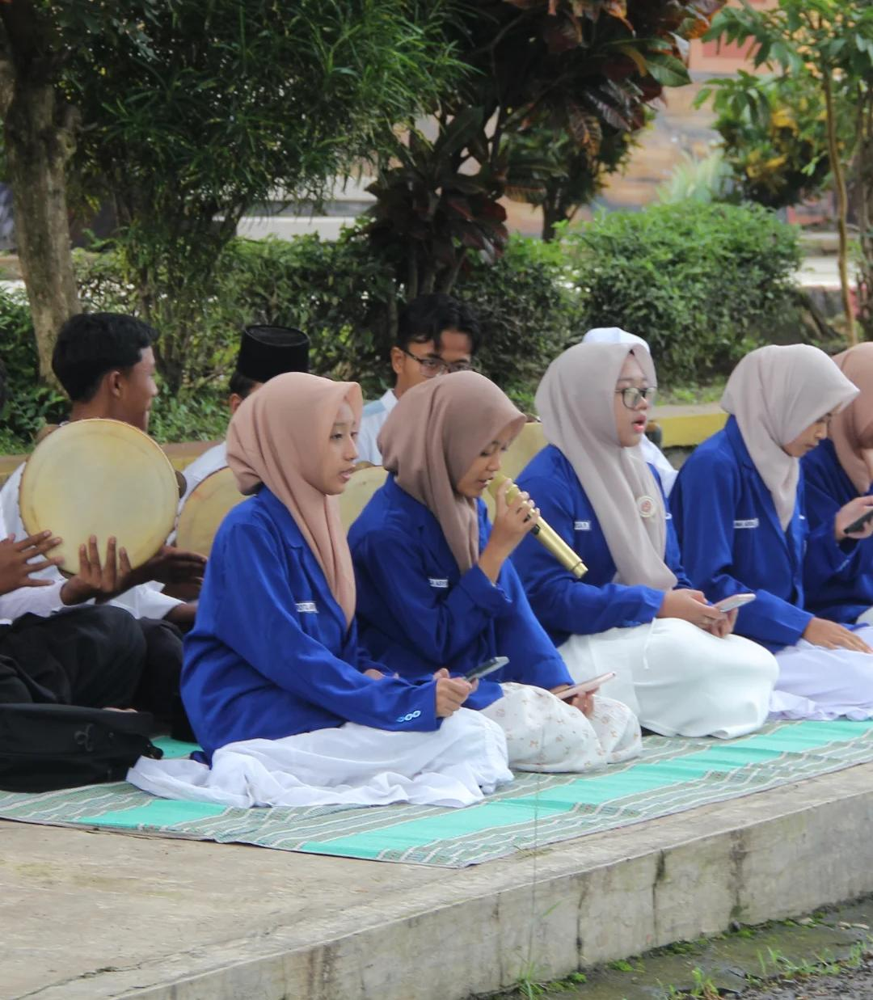

Ekstrakurikuler seni musik Islami yang menjadi wadah bagi siswa untuk mengembangkan kemampuan dalam melantunkan sholawat dan memainkan alat musik hadrah.
Banjari merupakan salah satu ekstrakurikuler yang berada di bawah naungan REMAJA MASJID SMANSAPA.
Kegiatan ini berfokus pada seni musik Islami, pembacaan sholawat, serta pengembangan bakat siswa dalam bidang hadrah dan dakwah melalui seni.
Selain melatih keterampilan musik, Banjari juga menjadi sarana untuk mempererat ukhuwah dan meningkatkan kecintaan kepada Rasulullah SAW.
Latihan alat musik serta vokal pada setiap hari Selasa sepulang sekolah
Mengisi berbagai kegiatan dan acara keagamaan di sekolah.
Berpartisipasi dalam kegiatan PHBI dan acara keagamaan lainnya.